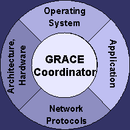

Directed by: Sarita V. Adve, Douglas L. Jones, Robin H. Kravets, Klara Nahrstedt
Departments
of Computer Science and Electrical and Computer Engineering
University of Illinois at Urbana-Champaign
graceATcs.uiuc.edu
Target: Mobile systems processing multimedia data.
Challenges:
Demanding, dynamic, multidimensional resource needs and constraints.
Opportunities: Multimedia applications can trade off output
quality for system resources and exhibit a large difference between
their peak and average demands.
Approach: Design all system layers with an ability to adapt in response to system or application changes. To reap the full benefits of these adaptations, however, all system layers must cooperate to reach a system-wide globally optimal configuration.
GRACE goal: An integrated cross-layer adaptive system where hardware and all software layers cooperatively adapt to maximize user satisfaction while meeting current resource constraints (e.g., energy, CPU time, and network bandwidth).
Associated projects: Thermal power modeling, adaptation for network processors, multithreaded architectures for multimedia applications.
Updated August 22, 2003 .